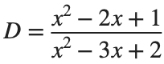
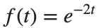
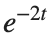
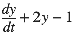
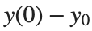

Laplace Transform
실행 조건
MATLAB: Symbolic Math Toolbox 필요.
ver('symbolic') 결과가 비어 있으면 MATLAB의 Add-Ons에서 Symbolic Math Toolbox를 설치하세요.
학습 목표
시간 영역의 Differential Equation을 변환해 푼 답이 원래 문제를 만족하는지 직접 검증합니다.
식을 정리해도 값이 같은지 확인하기
시작 조건

를 약분합니다. 값 비교에는진행 방법
- D를 약분하고, 원래 분모가 0이 되는 x를 따로 표시하세요.
- 에서 약분 전후 값이 같은지 확인하세요. 는 왜 같은 방식으로 확인할 수 없는지 설명합니다.
남길 결과
- 약분 전후 식과 제외할 값, 두 점의 대입 결과.
assert(exist('sym','file')~=0,'Symbolic Math Toolbox is required.');
syms x
D=(x^2-2*x+1)/(x^2-3*x+2);
disp('약분한 식'); disp(simplify(D)); disp('원래 분모의 근'); disp(solve(x^2-3*x+2==0,x));
% TODO: x=0,3의 값을 대조하고 제외할 두 점을 설명하세요.
결과 기록·자가 점검
약분 전 식 | |
약분 후 식 | |
대입에서 제외할 x | |
두 점의 값 차이 |
확인할 점
- 원래 분모가 0인 두 값을 모두 표시했는가?
- 약분한 식만 보고
 을 원래 식에 대입하지 않았는가?
을 원래 식에 대입하지 않았는가?
Laplace Transform과 역변환
시작 조건
t>0에서

를 변환하고 다시 역변환합니다.진행 방법
- laplace와 ilaplace를 사용해 변환·역변환을 구하세요.
- 에서 원래 함수와 복원한 함수의 값을 대조하세요.
- 변환식의 Pole −2와 시간 영역의 감쇠 항

를 연결해 설명하세요.
남길 결과
- F(s)·복원한 함수·수치 차이의 짧은 표.
syms t positive
syms s
f=exp(-2*t); F=laplace(f,t,s); restored=ilaplace(F,s,t);
disp(F); disp(restored);
% TODO: 지정한 세 시각에서 원래 함수와 역변환의 차이를 구하세요.
결과 기록·자가 점검
함수 | |
F(s) | |
역변환 | |
최대 수치 오차 |
확인할 점
- t의 양수 가정과 Initial Condition을 기록했는가?
- 같은 t>0에서 원함수와 역변환의 수치 오차가 1e-8 이하인가?
Initial Condition이 있는 Differential Equation
시작 조건
진행 방법
- 미분항의 Laplace Transform을 쓰고 Initial Condition을 대입해
 를 얻으세요.
를 얻으세요. - 이 식의 양변을 로 나누어 를 구하세요. 두 Initial Condition을 각각 대입하고 역변환한
 를 s에 함께 그리세요.
를 s에 함께 그리세요. - 각 에서

과
를 계산하세요. 두 잔차를 Initial Condition별로 기록하고 0인지 판단하세요.
남길 결과
- 두 응답 곡선과 잔차 표, Initial Condition의 역할 짧은 설명.
syms t positive
syms s
for y0=[0 1]
Y=(1/s+y0)/(s+2); y=ilaplace(Y,s,t); disp(y0); disp(y);
end
% TODO: Initial Condition과 ODE의 잔차, 두 응답 그래프를 추가하세요.
결과 기록·자가 점검
y(0) | |
Y(s) | |
초기값 잔차 | |
ODE 잔차 | |
Steady State 값 |
확인할 점
- 입력과 Initial Condition이 서로 다른 항으로 들어갔는가?
- 심볼릭 잔차가 0이고 두 응답의 Steady State 값이 같은가?